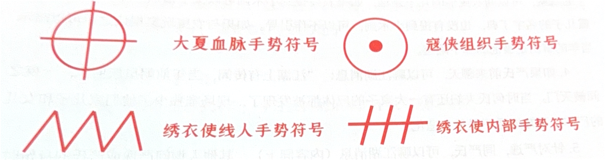
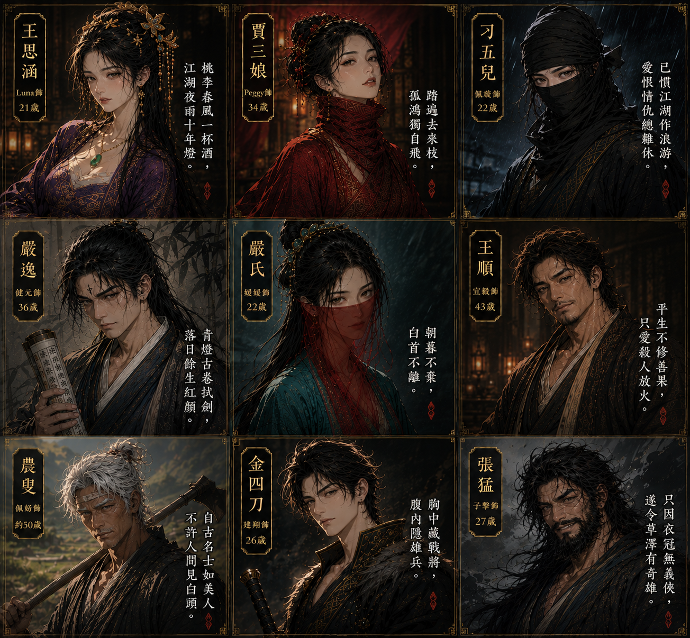

張猛
只因衣冠無義俠，遂令草澤有奇雄。
情景一
你的故事
你叫冷降塵，而在這次任務中，你化名爲「張猛」。 十四歲之前，你的名字叫做「丁典」。而如今，已經沒有人會這麼叫你，甚至連你自己都快遺忘了本名。 你的親生父親丁崧是大夏王朝的重臣，也是披荊斬棘的名將。大夏王朝末年，權臣鄭木把持朔政，戰事頻起，民不聊生，民間興起了許多以反抗鄭木的武裝勢力，被稱爲「寇俠」。 鄭木召集大夏所有高級將領共同討伐寇俠，父親也是其中一員。 一番激戰後，父親抓住了寇俠鶴須軍的首領冷佛林，卻發現對方並不是爲非作歹的流寇，反而義薄雲天，心懷大義，父親與他多次交談成爲了好友，最終父親做出決定，私放了這名反抗權臣鄭木的寇俠首領冷佛林。 此事被父親手下的人告發，鄭木得知後震怒，下令將你們全家流放邊關，並派遣他的私人特務機構——繡衣使押送，丁氏家族就此衰落。父親和家族拼盡全力才將你救出，並把你託付給了冷佛林。你和親生父親就此別離，此後再也沒能相見。你手中唯一與父親有關的物品只有一把他爲你雕刻的小木劍。 你也嘗試過尋找父親的下落，可兩年下來都毫無線索。這時天下已經大變，權臣鄭木婆朝成功，毀了大夏一朝二百年的江山。鄭木建立起朝，卻是朝令夕改，貪腐橫行，百姓的日子越來越難過，天下湧現出了越來越多抗擊起朝的寇俠組織。 冷佛林收你爲義子，並把自己的姓給了你，從此你便改名爲冷降塵，在冷佛林的寇俠軍—鶴須軍中一天天長大。在鶴須軍中，你耳滿目染，掌握了領軍技巧，與此同時，親生父親傳授給你的「縛陽掌」你也練得頗爲精進。 冷佛林還有一獨女，名爲冷鈺，她小你五歲，和你相處得如同親生兄妹一般。雖然你時常思念自己的親生父親，但有了冷佛林和冷鈺的關懷，有一衆鶴須軍兄弟的支持，你也越來越習慣在鶴須軍中的日子。
在你二十一歲的時候，冷佛林祕密聯繫了天下各寇俠首領，籌劃來年的攻起大事。冷佛林做了萬全的準備，帶你一同前行，都不料還是遭到了伏擊。十數個殺手埋伏在你們的必經之路，你們拼盡全力將來敵一一擊殺，就在你們以爲大獲全勝之時，一個身材中等的蒙面刺客用匕首將冷佛林右肋刺傷。你一掌擊在對方左肩上，此人在你的攻擊下落荒而逃，而冷佛林緩緩倒下，身體也迅速變黑，你這才發現，匕首上有毒。你永遠忘不了冷佛林毒發身亡的情形，也第一次感受到了起特務機構—繡衣使的可怕。 你繼承了鶴須軍的衣鉢，並於次年同天下寇俠軍聯合攻打了宛平府。然而你們鶴須軍同玄甲軍起了齟齬，合作並不默契，這次戰爭以寇俠聯軍大敗而告終，玄甲友軍的統帥甚至在此一役中戰死。當時，你遠遠地只看見一個穿着鶴須軍軍服的男子割下了旭晨的首級，隨後趁亂逃走，但你知道，鶴須軍軍紀嚴明，絕不會行此卑鄙之事，定是有人渾水摸魚。 這一戰寇俠損失了數萬兄弟，你痛定思痛，決定爲壯大鶴須軍招兵買馬。然而回到鶴須軍駐地時，你發現冷佛林的獨女冷鈺失蹤了，你派人四處尋找，卻沒有發現義妹的蹤跡。 你廣納人才，鶴須軍終於迎來了自己的新生。一個名爲「金四刀」的年輕將領非常出色，在此人的管理下，鶴須軍逐漸恢復生機。你將鶴須軍將領才有的身份銘牌給了金四刀，那是一塊通體碧綠的玉佩，刻着淺淺的羽毛痕跡，如今軍中只有你們二人擁有這玉佩。你們也逐漸交心，你甚至知道了對方的真實身份，他是前朝大夏皇族的旁支宗親，真名日「何乃武」。 對你來說，鶴須軍中有了何氏宗親，未來起勢則名正言順。當然你也知道，何乃武到你鶴須軍絕對不是僅僅爲了偏安一隅，他有着更大的野心，但你並不在意這些。 同時，你也加強了對鶴須軍備高級將領的護衛，你甚至爲自己找了一個武功高強的近待—刁五兒。此人雖然身材矮小，身形佝僂，終日以黑布蒙面，看着頗爲陰鬱，但他武功頗高。 冷佛林之死讓你感受到了特務組織的重要性，所以你在隱瞞所有人的情況下不斷拓展鶴須軍的特務組織能力，也掌握了江湖中大量的信息。
近日經歷
你收到了一封信，上書「降塵兄，中元節將至，可否請君至玄甲軍中，共祭宛平大戰數萬兄弟，且當前朝廷昏庸，當儘快定下再舉之策。此乃密謀，我等將化身前往盤興口天福客棧等待降塵兄。」落款人是玄甲軍的大統領。 此信約你在七月十一前往蒼脊山盤興口的天福客棧。玄甲軍一向和鶴須軍不睦，你意識到這封信有蹊蹺，但這鴻門宴你還是要去，爲了天下百姓，爲了實現冷佛林的遺志……
今日經歷
麒安二年，七月十一，你帶着金四刀和刁五兒一同到了盤興口天福客棧。你們三人爲了掩人耳目，此次同玄甲軍密會都做了客商裝扮，爲了不暴露鶴須軍首領的身份，你化名爲張猛。 客棧中有些冷清，老闆娘在案臺後指使小二忙東忙西，見你們進入客棧後便滿臉堆笑地站起了身。客棧大堂角落，坐着一對江湖賣藝人打扮的父女。隨後，一對夫婦進入客棧，賣藝女看到有客人來了，便開始彈唱起來。又過了一會，一個農夫打扮的老者走入客棧，他不慌不忙地坐下，又掏出隨身布袋開始整理。
整個遊戲環節你需要注意的
對外身份介紹內容（個人介紹使用的身份）
對外身份介紹內容（個人介紹使用的身份） 你是一個客商，名叫張猛，和其他兩個客商一起四處收貨。如今來到盤興口就是爲了採買這裡的珍貴藥材鶴紅草，因爲每年的中元節前夕，都是鶴紅草大量出產的日子。
真實身份內容（需要盡量全程隱瞞的真實身份）
你的本名叫冷降塵，是鶴須軍大統領。你同金四刀和刁五兒來到客棧是因爲玄甲軍的一封信。
你的人物在整體遊戲過程中最重要的任務：帶節奏，炒場，增強現場活躍度。
規則提醒：作爲扮演冷降塵的 NPC，你需要仔細閱讀上述所有內容。同時要將其他人的劇情進行閱讀，提前掌握所有人的信息，因爲在遊戲前幾個環節，需要扮演冷降塵的 NPC 同大家一起進行個人介紹，進行遊戲互動，加入私聊等。 你在場上主要以活躍氣氛爲主。 目前在客棧的身份是客商張猛，除了金四刀和刁五兒之外，其他人都不知道你是鶴須軍大統領冷降塵。在和其他玩家私聊溝通時，你可以適當隱瞞自己的真實身份，但是如果有玩家追問，也可以告知他們。一定不要暴露金四刀是大夏何氏皇族後裔。 手勢符號可以畫到便籤上使用，也可以在對方掌心處直接作畫使用。手勢符號可以在遊戲全程加以使用（如果你膽大心細，在公聊階段拿來和其他人進行暗地裡的溝通也可以。）

你（冷降塵）掌握的各類線索：冷降塵身爲鶴須軍大統領，深知特務情報機構的重要性，在多年發展自身的特務機構情況下，你掌握了不少江湖上的線索。
不需要隱藏的線索（可以透露給所有人）：
◎「我在盤興口發現了前朝大夏將領的蹤跡，應該就在我們之中。」
◎「這些日子天福客棧會有繡衣使來接頭。」
◎「我知道現在客棧中應該有玄甲軍的實際統帥，你知道是誰嗎？」
◎「何氏滅門慘案我有所耳聞，據說當時何氏夫婦還有一大家子的屍體都被發現了，現場唯獨少了他們家兒子和女兒的屍體，不知道是不是另有造化。」
◎可以提及你丁家的往事，比如父親丁崧身陷囹圖。但是不要過於直接，用「聽說過嗎，前朝大夏有個將領丁崧是被部下陷害的」的話術即可。
第一輪私聊中，針對不同角色的話術：
- 可以想辦法告知刁五兒玩家：「我收到密信，知道了你是我的義妹冷鈺。我想告訴你義父絕不是我殺的。義父當年被一個蒙面刺客刺傷右肋，由於匕首帶毒，義父毒發身亡。兇手逃走時左肩中了我的縛陽掌。」但不要告訴其他玩家刁五兒身份。
- 如果王思涵玩家過來詢問旭晨之死，可以告訴她：「我知道你是爲何而來，不過我並非殺害旭晨的真兇，我鶴須軍中也不會有人幹出如此卑鄙的事。當年之事是有人藉機挑撥，陷害於鶴須軍。」
- 如果農叟玩家前來聊天，你可以說：「我對你有種莫名的親切感。」如果玩家詢問兒子的線索，可以問農叟他的兒子是誰，如果農叟提到小木劍可以父子相認，如果玩家沒有透露兒子的名字丁典，也沒有提到小木劍，可以不作引導。如果與農叟玩家相認之後可以暗示當年的事情是被他的部下陷害。
- 如果嚴氏前來聊天，可以聊江湖消息：「江湖上有傳聞，當年前朝皇族何氏，一夜之間被滅門。當時何氏夫婦還有一大家子的屍體都被發現了，現場唯獨少了他們家兒子和女兒的屍體，不知道是不是另有造化。」
- 針對嚴逸，同嚴氏，可以聊江湖消息（內容同上），其他人詢問嚴逸或嚴氏的身份時，你需要推說不知道。
- 針對賈三娘，常規玩家不會主動對其他人提及當年擊殺冷佛林的事，但若真的提起，你只需要對她說「我覺得你長得很眼熟」即可。如果其他玩家問起賈三娘的情況，你也只能說「我看這位老闆娘長得十分眼熟，也許是我曾經見過的人。」
- 針對王順，劇情上你已經了解了他的所做所爲，但是沒有確鑿的證據。所以有人問起該角色的情況時，你可以以下列話術應對：「這個人頗有城府，不可小覷。」
- 針對金四刀，因爲金四刀個人劇本中有所描寫，所以你對該角色可以提及「我知道你的身份，是大夏後商一族，何氏的血脈。」但對其他玩家不要說出上述內容。
你的任務
- 在私聊或自我介紹的過程中，給玩家一定的信息，對玩家進行引導。
- 第一輪私聊快結束時給刁五兒及金四刀兵符可採用以下話術。
將虎賁軍兵符交予金四刀： 「世子若想復興大夏，單靠我鶴須軍的力量是遠遠不夠的。這兩塊兵符，一個是鶴須虎賁衛兵符，一個是近衛軍兵符。如今的鶴須軍聲勢大漲，都是世子的功勞，冷某是不敢搶功的。更何況世子乃大夏正統，冷某更是會全力支持世子的大計。只是鶴須軍原本就是冷某代義父領導，如今我已經找到了他的後人，這塊近衛軍兵符，自然要交到他後人的手上。至於此人是否能像冷某一樣支持世子，就要看世子的造化了。」
將近衛軍兵符交予刁五兒： 「這是我鶴須軍的近衛軍兵符，今日我將鶴須軍的半數軍權交給你。」
江湖密行環節
要記住，在這個環節需要將自己當做一個普通玩家參與遊戲。如果獲勝，正常抽取獎勵即可。
你在本階段的任務
- 炒場活躍氣氛，這是本劇本第一個公聊遊戲環節。
情景二 — 尚未解鎖
等待主持人宣布進入情景二，並向主持人取得解鎖碼。
解鎖碼不正確，請向主持人確認
情景二
兇案環節
◎ 本環節你承擔的任務只有一個，那就是扮演屍體。你要將3張《屍體線索》和一封書信，連同之前獲得的所有卡片獎勵和銀兩，同時藏在身上不同的位置。
◎ 在屍體搜證環節完成真人線索搜證，NPC的任務到此結束，退場。
🌍 遊戲公開資訊 (登場角色 · 世界觀 · 組織圖)
🎭 登場角色一覽 (點擊可放大)

🗺️ 世界觀與江湖組織 (點擊可放大)


💬 與 主持人 (GM) 的私密密談視窗
這裡的對話僅有您與 GM 能夠看見，可用於暗中密談、回報任務進度、或隨時向 GM 尋求指引。對話每 5 秒會自動重整。